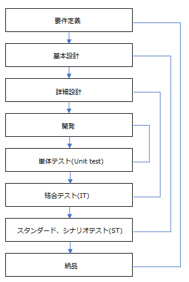
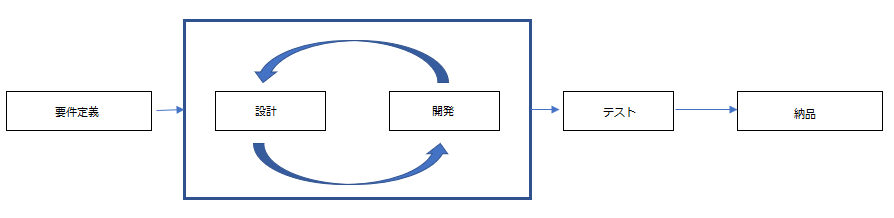

[Project design] プロジェクトを工程(ウォーターフォール vs アジャイル)
こんにちは。明月です。
この投稿はプロジェクトを工程(ウォーターフォール vs アジャイル)に関する説明です。
普通にどのプログラムを作成する時に、多い方がパソコンをパワーを付けて、IDEツール(Visual studioやeclipse)を実行し、コードを作成してプログラムを作ろうと思います。
私も大学生時代にはそう思ったと思います。
でも、この方法でプログラムを作成すればプログラムが思ったより違うか想像したことよりクオリティ(品質)がすごく悪く完成する場合が多いです。凄く素晴らしいプログラム作成能力や頭が天才ほど良い方にはこんなに作成しても良い品質なプログラムを作られるかもしれませんが、私の場合は思った通りに出来なった場合が多かったんです。
理由はいろいろがあると思いますが、一応始めに考えた計画内容を忘れたり、作成しながら欲心が出来て元々考えた内容より様々な機能を入れ込んだり、テストが足りなくて思われないバグが発生することなどの理由があります。
勉強する時にはこのことでプロジェクト失敗にしても別に損害がないですが、実務でそのようにしてプロジェクト失敗にするとすぐ損害になります。
また、勉強する時とは違い、実務では一人ではなく、チーム単位で動くので、チーム員が目標をちゃんと決められないとかプロジェクトの方向が見えないのでチーム内の雰囲気が悪くなる場合もあります。
そのようにならないためにはプロジェクトを設計する人には先に工程に関して考えなければならないです。
プロジェクト工程は我々がどのプログラムを作成するかを設定して、そのプログラムを作成するためにはどの過程を通って作成するか、どの方法でテストをするかどの方法で情報を共有するかを設定することだと思えば良いです。
理論的には代表的にウォーターフォール工程とアジャイル工程があります。
理論的な説明はここで説明することよりウィキペディアで確認する方法が良いです。
link - https://ja.wikipedia.org/wiki/ウォーターフォール・モデル
ウォーターフォールは簡単に説明すると下記通りの工程です。

簡単に説明すると要件定義はお客様が作りたい定義、どのデータをどのように出力するか、どの環境で使うかを決定する部分です。普通にはPM(Project Manager)がお客様と会議などを通って決める部分です。
基本設計はUMLで色々なダイアグラムを作成することも良いですが、普通は画面設計とデータベース設計(ER)がこの段階で作成します。もっと詳細に作成したいならストリーボードもここで作成します。
詳細設計はプログラム上で抽象クラスはどのように作成するか、クラスの階層構造、共通関数などを設定して最終的にプログラムをどのように作成するかを決める部分です。
開発は言葉とおりにプログラムをコーディングする部分です。
単体テストは関数単位やクラス単位でテストする部分で普通はJUnitやNUnitなどを利用してプログラム開発する時に同時に作成する時もあります。
結合テストは詳細設計通りにクラス間のインターフェース、オブジェクトのInput、Outputが正確に表示されるかのテストです。
スタンダードあるいはシナリオテストは基本設計通りにプログラムが全体的に作動するか、お客様が望む通りに作動するかを確認するテストです。
最後は要件定義通りにお客様に報告して納品することです。
ウォーターフォール工程は利点はプログラムを無欠に作成するができるし(バグがほぼない)、正確な工数計算、チームの割り振りがしやすい、各の役割があるところでチームのないのコミュニケーションがしやすいし(レビュー含め)、プロジェクトの途中でメンバー異常(チーム員外れ)が発生する時にすぐ対処できる形です。
欠点としては工程が多く見えますが、そのほど開発期間が長いです。開発期間が長いというのはお金もかかるという意味ですね。そして工程は柔軟性がないので、詳細設計中でお客様の要請事項、変更事項が発生する時に、新しいブランチに分離することが難しいです。
アジャイルに関する理論的な説明もウィキペディアを参考してください。
link - https://ja.wikipedia.org/wiki/アジャイルソフトウェア開発
アジャイルは簡単に説明すると下記通りの工程です。

アジャイルはウォーターフォールと比べて写真では単純に上から下の工程から左から右になれる差異だけだと見えますが、実務は全然違います。
アジャイルは設計と開発の工程をすごく単純な工程で作ることでソースコードを設計図みたいに作成します。
つまり、ウォーターフォールには抽象クラスやインターフェースを作成しなくても結果物を作られますが、アジャイルにはできればできるほど抽象クラスやインターフェースを作成してソースコードの中で設計図を作成する方法です。
そのことように作成して設計段階を省略して要求事項があるたびにすぐ開発する方法です。そして要件定義もバージョンを生成してそのままにブランチを作成してテスト段階に渡す方法ですね。
その部分のスクラムサイクルといいますが、普通は1か月、あるいは2か月単位でサイクルを作成して段階別に開発、テストが行います。
文字で説明しようと思うから正確に説明ができないですね。
例えば、最初に開発する時に、0.01バージョンで要件定義を受け取ります。そして0.01バージョンを開発する時に要件定義には0.02バージョンを受け取ります。
また、0.01バージョンの開発が終わったらテスト工程になりますが、開発工程は0.02を開始します。もちろん、要件定義は0.03バージョンを受け取ります。
そのことに0.01が納品(デプロイ)になるとテスト工程には0.02が開始、開発は0.03を開始、要件定義は0.04を受け取ります。
ウォーターフォールの場合は要件定義から順番的に行って、途中でブランチが発生しても、最初の要件定義が納品した後に作成することにしますが、アジャイルは並列的に工程が可能です。
アジャイルの利点はプログラムをすごく早く作成することができるし、工程の柔軟性が良いし、正確な工数計算と役割を割り振りしやすいことがあります。
欠点にはアジャイル開発工程のためのチーム員の高いスキルが要求されるし、並列処理なので途中でバグが発生する時に対処することが難しいことがあります(例えば、0.02で致命的なエラーが発生しましたが開発は0.03になっています。その場合にバグを0.03で直してバグがあるままで0.02を納品するか0.03を止まって0.02に戻るかの問題です。)
そのため、アジャイル工程はウォーターフォールに比べて品質が悪い場合があります。
ここまでが理論的な説明です。実務では上みていに理論通りに動けません。
理由は様々がありますが、やはり一番大きな理由はお金ですね。
ウォーターフォールの場合は良い品質のプログラムが生産しますが、開発期間が長いし、長いというのはお金がかかるという意味です。アジャイルの場合は速く開発ができますが、品質の問題があります。また、工程スキルが高いので費用が高い開発者を使うので凄く削減効果があることではありません。
お客様の立場ではシニア開発者の一人、二人と一般開発者を付けてプロジェクトをやりたい時が多いです。
そのことで高い品質と低い値段でプロジェクトを成功することを期待することです。
なので、仕様によりウォーターフォールとアジャイルを混ぜている工程が生成されます。
私の場合はアジャイル方法みたいに設計を省略してフレームワークとコアーを最大に構成して開発からテストを一つのブランチで結んで開発します。
つまり、要件定義から開発までは、アジャイル方法、開発から最終テストまではウォーターフォールの開発工程を作ります。そのようにするとテストで仕方がなく、時間がかかりますが、ウォーターフォールより速いし、コアーやフレームワークはシニア開発者が、Process領域、つまり、継承して業務プログラムを作成する部分は一般開発者が任せる工程でするのでバグ発生率も減らすことも可能です。
また、利点はシニア開発は様々なプロジェクトを同時に作成することができます。
例えば、シニア開発者が4人のA、B、C、Dがいると思えば、一つのプロジェクトにA、Bがシニアを任せるし他のプロジェクトにはC、Dがシニアを任せます。一つのプロジェクトの一般開発者はC、Dが任せる、他のプロジェクトにはA、Bが任せることで担当を混ぜて開発することができます。
ここで一般開発者が投入されると負荷があるプロジェクトに参加するし、様々に工程変更もしやすいです。
欠点は開発者がすごく大変になりますね。スクラムサイクルの恐怖と言います。でも、工数を入れたり、引いたりがしやすいので、休暇や代替工数を入れることもしやすいです。
私の場合はこのタイプでプロジェクトを運用する時が多いですが、全然問題がなかったということではないですが、私の性格にはちょうど合う工程ではないかと思いますね。
ここまでプロジェクトを工程(ウォーターフォール vs アジャイル)に関する説明でした。
ご不明なところや間違いところがあればコメントしてください。
- [Project design] プログラム最終テスト - ST(System test(Standard, Scenario))2021/10/26 19:10:07
- [Project design] プログラム結合テスト - IT(Integration test)2021/10/25 20:12:17
- [Project design] プログラム検証とテスト - Unitテスト2021/10/22 19:34:09
- [Project design] プログラム制作(コーディング) - クラス作成方法2021/10/20 19:28:09
- [Project design] プログラム制作(コーディング) - 関数作成方法2021/10/19 21:01:32
- [Project design] 詳細設計(インターフェース設計と抽象化作業)2021/10/18 18:23:15
- [Project design] 基本設計(画面設計とDB設計)2021/10/17 21:21:11
- [Project design] 要件定義(要求事項整理)2021/10/15 19:28:58
- [Project design] プロジェクトを工程(ウォーターフォール vs アジャイル)2021/10/14 18:36:04
- [Java] 59. Spring bootのJPAでEntityManagerを使い方2022/02/25 18:27:48
- [Java] 58. EclipseでSpring bootのJPAを設定する方法2022/02/23 18:11:10
- [Java] 57. EclipseでSpring bootを設定する方法2022/02/22 19:04:49
- [Python] Redisデータベースに接続して使い方2022/02/21 18:23:49
- [Java] Redisデータベースを接続して使い方(Jedisライブラリ)2022/02/16 18:13:17
- [C#] Redisのデータベースを接続して使い方2022/02/15 18:46:09
- [CentOS] Redisデータベースをインストールする方法とコマンドを使い方2022/02/14 18:33:07
- [Design pattern] 3-6. ステートパターン(State pattern)2021/11/17 20:04:47
- [Design pattern] 3-5. メメントパターン(Memento pattern)2021/11/16 20:01:36
- [Design pattern] 3-4. イテレータパターン(Iterator pattern)2021/11/15 19:31:28
- [CentOS] Linux環境(CentOS)でCassandra(NoSQL DB)をインストールする方法(DBeaverブラウザでNoSQL使い方)2021/11/12 17:33:58
- [Design pattern] 3-3. コマンドパターン(Command pattern)2021/11/05 17:01:42
- [Window] apache-tomcatでロードバランシング(Load balancing)する方法とセッションクラスタリング（セッション共有）2021/11/05 16:58:45
- [Window] Apacheでmod_jkとmod_proxyの差異、apacheでtomcatのwebsocketのプロキシフォーワードする方法2021/11/05 16:55:05
- [PHP] Apache環境の同じホスト中でPHPとJava(Servlet)を同時に起動、運用する方法2021/11/05 16:52:04